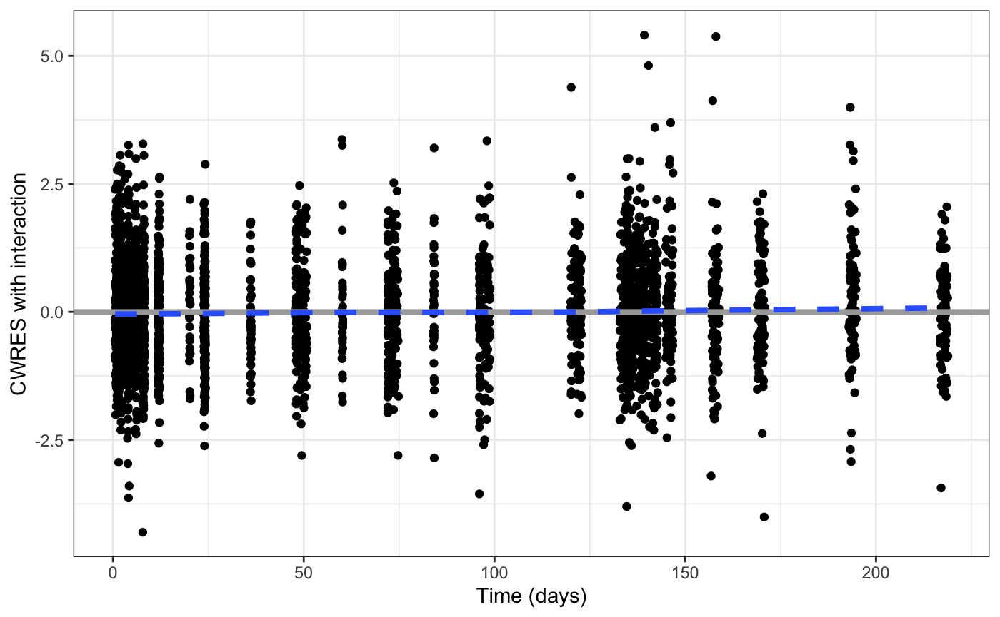

pmplots
Kyle Baron
2020-06-30
pmplots.RmdExample data
There is an example data set embedded in pmplots
data <- pmplots_data_obs()
pmplots is designed to work with data sets that have columns named according to certain expectations. So we tend to look for these types of columns
select(data, ID, TIME, DV, IPRED, ETA1, CWRESI)
## # A tibble: 3,142 x 6
## ID TIME DV IPRED ETA1 CWRESI
## <int> <dbl> <dbl> <dbl> <dbl> <dbl>
## 1 1 0.61 61.0 69.5 -0.0753 -0.621
## 2 1 1.15 91.0 91.2 -0.0753 0.0895
## 3 1 1.73 122. 97.1 -0.0753 1.60
## 4 1 2.15 126. 96.2 -0.0753 1.89
## 5 1 3.19 84.7 88.0 -0.0753 -0.0970
## 6 1 4.21 62.1 78.3 -0.0753 -1.06
## 7 1 5.09 49.1 70.7 -0.0753 -1.60
## 8 1 6.22 64.2 62.1 -0.0753 0.214
## 9 1 8.09 59.6 51.0 -0.0753 0.891
## 10 1 12.0 45.3 36.0 -0.0753 1.28
## # … with 3,132 more rowsYou might already have NONMEM modeling results with these column names. When the data set has these names, pmplots will work more automatically with the data set, requiring less manual input from the user.
Other columns that we have in the examples can be named according to your choosing
select(data, WT, ALB, STUDY, STUDYc, CRCL)
## # A tibble: 3,142 x 5
## WT ALB STUDY STUDYc CRCL
## <dbl> <dbl> <int> <fct> <dbl>
## 1 55.2 4.4 1 SAD 114.
## 2 55.2 4.4 1 SAD 114.
## 3 55.2 4.4 1 SAD 114.
## 4 55.2 4.4 1 SAD 114.
## 5 55.2 4.4 1 SAD 114.
## 6 55.2 4.4 1 SAD 114.
## 7 55.2 4.4 1 SAD 114.
## 8 55.2 4.4 1 SAD 114.
## 9 55.2 4.4 1 SAD 114.
## 10 55.2 4.4 1 SAD 114.
## # … with 3,132 more rowsYour first plot
With the data setup like this, we can make a plot of DV versus PRED very easily
dv_pred(data)
## `geom_smooth()` using formula 'y ~ x'
This plots dv versus pred and the name of the function indicates what will come out. pmplots can make this plot because there are columns called DV and PRED in the data set
select(data, DV, PRED)
## # A tibble: 3,142 x 2
## DV PRED
## <dbl> <dbl>
## 1 61.0 60.9
## 2 91.0 78.9
## 3 122. 83.5
## 4 126. 82.8
## 5 84.7 76.2
## 6 62.1 68.7
## 7 49.1 62.7
## 8 64.2 56.0
## 9 59.6 46.9
## 10 45.3 34.1
## # … with 3,132 more rowsThe overall philosophy of the package is to pass in data with these expected column names and receive a plot back. We will see how we can customize some aspects of the plots. But overall, the idea is that the function determines the look and feel of the plot. If you find yourself wanting a lot of creative customization then the suggestion is to work with plain old ggplot2 to make the plot
Other plots
There are a lot of plotting functions in pmplots, but the naming is systematic so that you can know the output from the name.
Similarly,
cwresi_time(data)
## `geom_smooth()` using formula 'y ~ x'
gives you conditional weighted residuals versus time.
And you can get different types of histogram plots
cwresi_hist(data)
## `stat_bin()` using `bins = 30`. Pick better value with `binwidth`.
Specifying data and axis title
Let’s look at cwresi_time function and look at the basic inputs for the plot
formals(cwresi_time)[1:3]
## $df
##
##
## $x
## pm_axis_time()
##
## $y
## pm_axis_cwresi()The first argument is df , the data set in data.frame format. The second argument is x or what goes on the x-axis, and third y, what goes on the y axis. The defaults for these arguments are the output from internal pmplots functions
pmplots:::pm_axis_time()
## [1] "TIME//Time {xunit}"pmplots:::pm_axis_cwresi()
## [1] "CWRESI//CWRES with interaction"For x, we have the name of the column in the data set (TIME) followed by a double-front-slash (//) and then the name that we want to go on the x-axis (Time). Similarly for y, the data is in column CWRESI and we want the y-axis title to be Conditional weighted residual.
This is called col_label format, and is a simple way to pass in both pieces of data.
If we wanted to modify either the data column name or the name of the axis title, simply provide a replacement for the default
cwresi_time(data, y = "CWRESI//Some other axis title")
## `geom_smooth()` using formula 'y ~ x'
And if you omit the title from the col_label, the title will be the column name
cwresi_time(data, y = "CWRESI")
## `geom_smooth()` using formula 'y ~ x'
Notice that the x argument had another piece in it … {xunit}
pmplots:::pm_axis_time()
## [1] "TIME//Time {xunit}"Looking at the y_time help topic, we see that xunit is the time unit for these plots. So, if our data has time unit of days, we can change that aspect of the plot
cwresi_time(data, xunit = "days")
## `geom_smooth()` using formula 'y ~ x'